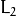
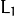
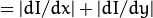

Feature Detection And Description¶
ocl::Canny¶
Finds edges in an image using the [Canny86] algorithm.
-
C++:
ocl::Canny(const oclMat& image, oclMat& edges, double low_thresh, double high_thresh, int apperture_size=3, bool L2gradient=false)¶
-
C++:
ocl::Canny(const oclMat& image, CannyBuf& buf, oclMat& edges, double low_thresh, double high_thresh, int apperture_size=3, bool L2gradient=false)¶
-
C++:
ocl::Canny(const oclMat& dx, const oclMat& dy, oclMat& edges, double low_thresh, double high_thresh, bool L2gradient=false)¶
-
C++:
ocl::Canny(const oclMat& dx, const oclMat& dy, CannyBuf& buf, oclMat& edges, double low_thresh, double high_thresh, bool L2gradient=false)¶ Parameters: - image – Single-channel 8-bit input image.
- dx – First derivative of image in the vertical direction. Support only
CV_32Stype. - dy – First derivative of image in the horizontal direction. Support only
CV_32Stype. - edges – Output edge map. It has the same size and type as
image. - low_thresh – First threshold for the hysteresis procedure.
- high_thresh – Second threshold for the hysteresis procedure.
- apperture_size – Aperture size for the
Sobel()operator. - L2gradient – Flag indicating whether a more accurate  norm
 should be used to compute the image gradient magnitude (
should be used to compute the image gradient magnitude ( L2gradient=true), or a faster default  norm  is enough (L2gradient=false). - buf – Optional buffer to avoid extra memory allocations (for many calls with the same sizes).
See also
ocl::BruteForceMatcher_OCL_base¶
-
class
ocl::BruteForceMatcher_OCL_base¶
Brute-force descriptor matcher. For each descriptor in the first set, this matcher finds the closest descriptor in the second set by trying each one. This descriptor matcher supports masking permissible matches between descriptor sets.
class BruteForceMatcher_OCL_base
{
public:
enum DistType {L1Dist = 0, L2Dist, HammingDist};
// Add descriptors to train descriptor collection.
void add(const std::vector<oclMat>& descCollection);
// Get train descriptors collection.
const std::vector<oclMat>& getTrainDescriptors() const;
// Clear train descriptors collection.
void clear();
// Return true if there are no train descriptors in collection.
bool empty() const;
// Return true if the matcher supports mask in match methods.
bool isMaskSupported() const;
void matchSingle(const oclMat& query, const oclMat& train,
oclMat& trainIdx, oclMat& distance,
const oclMat& mask = oclMat());
static void matchDownload(const oclMat& trainIdx,
const oclMat& distance, std::vector<DMatch>& matches);
static void matchConvert(const Mat& trainIdx,
const Mat& distance, std::vector<DMatch>& matches);
void match(const oclMat& query, const oclMat& train,
std::vector<DMatch>& matches, const oclMat& mask = oclMat());
void makeGpuCollection(oclMat& trainCollection, oclMat& maskCollection,
const vector<oclMat>& masks = std::vector<oclMat>());
void matchCollection(const oclMat& query, const oclMat& trainCollection,
oclMat& trainIdx, oclMat& imgIdx, oclMat& distance,
const oclMat& maskCollection);
static void matchDownload(const oclMat& trainIdx, oclMat& imgIdx,
const oclMat& distance, std::vector<DMatch>& matches);
static void matchConvert(const Mat& trainIdx, const Mat& imgIdx,
const Mat& distance, std::vector<DMatch>& matches);
void match(const oclMat& query, std::vector<DMatch>& matches,
const std::vector<oclMat>& masks = std::vector<oclMat>());
void knnMatchSingle(const oclMat& query, const oclMat& train,
oclMat& trainIdx, oclMat& distance, oclMat& allDist, int k,
const oclMat& mask = oclMat());
static void knnMatchDownload(const oclMat& trainIdx, const oclMat& distance,
std::vector< std::vector<DMatch> >& matches, bool compactResult = false);
static void knnMatchConvert(const Mat& trainIdx, const Mat& distance,
std::vector< std::vector<DMatch> >& matches, bool compactResult = false);
void knnMatch(const oclMat& query, const oclMat& train,
std::vector< std::vector<DMatch> >& matches, int k,
const oclMat& mask = oclMat(), bool compactResult = false);
void knnMatch2Collection(const oclMat& query, const oclMat& trainCollection,
oclMat& trainIdx, oclMat& imgIdx, oclMat& distance,
const oclMat& maskCollection = oclMat());
static void knnMatch2Download(const oclMat& trainIdx, const oclMat& imgIdx, const oclMat& distance,
std::vector< std::vector<DMatch> >& matches, bool compactResult = false);
static void knnMatch2Convert(const Mat& trainIdx, const Mat& imgIdx, const Mat& distance,
std::vector< std::vector<DMatch> >& matches, bool compactResult = false);
void knnMatch(const oclMat& query, std::vector< std::vector<DMatch> >& matches, int k,
const std::vector<oclMat>& masks = std::vector<oclMat>(),
bool compactResult = false);
void radiusMatchSingle(const oclMat& query, const oclMat& train,
oclMat& trainIdx, oclMat& distance, oclMat& nMatches, float maxDistance,
const oclMat& mask = oclMat());
static void radiusMatchDownload(const oclMat& trainIdx, const oclMat& distance, const oclMat& nMatches,
std::vector< std::vector<DMatch> >& matches, bool compactResult = false);
static void radiusMatchConvert(const Mat& trainIdx, const Mat& distance, const Mat& nMatches,
std::vector< std::vector<DMatch> >& matches, bool compactResult = false);
void radiusMatch(const oclMat& query, const oclMat& train,
std::vector< std::vector<DMatch> >& matches, float maxDistance,
const oclMat& mask = oclMat(), bool compactResult = false);
void radiusMatchCollection(const oclMat& query, oclMat& trainIdx, oclMat& imgIdx, oclMat& distance, oclMat& nMatches, float maxDistance,
const std::vector<oclMat>& masks = std::vector<oclMat>());
static void radiusMatchDownload(const oclMat& trainIdx, const oclMat& imgIdx, const oclMat& distance, const oclMat& nMatches,
std::vector< std::vector<DMatch> >& matches, bool compactResult = false);
static void radiusMatchConvert(const Mat& trainIdx, const Mat& imgIdx, const Mat& distance, const Mat& nMatches,
std::vector< std::vector<DMatch> >& matches, bool compactResult = false);
void radiusMatch(const oclMat& query, std::vector< std::vector<DMatch> >& matches, float maxDistance,
const std::vector<oclMat>& masks = std::vector<oclMat>(), bool compactResult = false);
DistType distType;
private:
std::vector<oclMat> trainDescCollection;
};
The class BruteForceMatcher_OCL_base has an interface similar to the class DescriptorMatcher. It has two groups of match methods: for matching descriptors of one image with another image or with an image set. Also, all functions have an alternative to save results either to the GPU memory or to the CPU memory. BruteForceMatcher_OCL_base supports only the L1<float>, L2<float>, and Hamming distance types.
See also
ocl::BruteForceMatcher_OCL_base::match¶
Finds the best match for each descriptor from a query set with train descriptors.
-
C++:
ocl::BruteForceMatcher_OCL_base::match(const oclMat& query, const oclMat& train, std::vector<DMatch>& matches, const oclMat& mask=oclMat())¶
-
C++:
ocl::BruteForceMatcher_OCL_base::matchSingle(const oclMat& query, const oclMat& train, oclMat& trainIdx, oclMat& distance, const oclMat& mask=oclMat())¶
-
C++:
ocl::BruteForceMatcher_OCL_base::match(const oclMat& query, std::vector<DMatch>& matches, const std::vector<oclMat>& masks=std::vector<oclMat>())¶
-
C++:
ocl::BruteForceMatcher_OCL_base::matchCollection(const oclMat& query, const oclMat& trainCollection, oclMat& trainIdx, oclMat& imgIdx, oclMat& distance, const oclMat& masks=oclMat() )¶
See also
ocl::BruteForceMatcher_OCL_base::makeGpuCollection¶
Performs a GPU collection of train descriptors and masks in a suitable format for the ocl::BruteForceMatcher_OCL_base::matchCollection() function.
-
C++:
ocl::BruteForceMatcher_OCL_base::makeGpuCollection(oclMat& trainCollection, oclMat& maskCollection, const vector<oclMat>& masks=std::vector<oclMat>())¶
ocl::BruteForceMatcher_OCL_base::matchDownload¶
Downloads matrices obtained via ocl::BruteForceMatcher_OCL_base::matchSingle() or ocl::BruteForceMatcher_OCL_base::matchCollection() to vector with DMatch.
-
C++:
ocl::BruteForceMatcher_OCL_base::matchDownload(const oclMat& trainIdx, const oclMat& distance, std::vector<DMatch>& matches)¶
-
C++:
ocl::BruteForceMatcher_OCL_base::matchDownload(const oclMat& trainIdx, const oclMat& imgIdx, const oclMat& distance, std::vector<DMatch>& matches)¶
ocl::BruteForceMatcher_OCL_base::matchConvert¶
Converts matrices obtained via ocl::BruteForceMatcher_OCL_base::matchSingle() or ocl::BruteForceMatcher_OCL_base::matchCollection() to vector with DMatch.
-
C++:
ocl::BruteForceMatcher_OCL_base::matchConvert(const Mat& trainIdx, const Mat& distance, std::vector<DMatch>& matches)¶
-
C++:
ocl::BruteForceMatcher_OCL_base::matchConvert(const Mat& trainIdx, const Mat& imgIdx, const Mat& distance, std::vector<DMatch>& matches)¶
ocl::BruteForceMatcher_OCL_base::knnMatch¶
Finds the k best matches for each descriptor from a query set with train descriptors.
-
C++:
ocl::BruteForceMatcher_OCL_base::knnMatch(const oclMat& query, const oclMat& train, std::vector<std::vector<DMatch>>& matches, int k, const oclMat& mask=oclMat(), bool compactResult=false)¶
-
C++:
ocl::BruteForceMatcher_OCL_base::knnMatchSingle(const oclMat& query, const oclMat& train, oclMat& trainIdx, oclMat& distance, oclMat& allDist, int k, const oclMat& mask=oclMat())¶
-
C++:
ocl::BruteForceMatcher_OCL_base::knnMatch(const oclMat& query, std::vector<std::vector<DMatch>>& matches, int k, const std::vector<oclMat>& masks=std::vector<oclMat>(), bool compactResult=false )¶
-
C++:
ocl::BruteForceMatcher_OCL_base::knnMatch2Collection(const oclMat& query, const oclMat& trainCollection, oclMat& trainIdx, oclMat& imgIdx, oclMat& distance, const oclMat& maskCollection=oclMat())¶ Parameters: - query – Query set of descriptors.
- train – Training set of descriptors. It is not be added to train descriptors collection stored in the class object.
- k – Number of the best matches per each query descriptor (or less if it is not possible).
- mask – Mask specifying permissible matches between the input query and train matrices of descriptors.
- compactResult – If
compactResultistrue, thematchesvector does not contain matches for fully masked-out query descriptors.
The function returns detected k (or less if not possible) matches in the increasing order by distance.
The third variant of the method stores the results in GPU memory.
See also
ocl::BruteForceMatcher_OCL_base::knnMatchDownload¶
Downloads matrices obtained via ocl::BruteForceMatcher_OCL_base::knnMatchSingle() or ocl::BruteForceMatcher_OCL_base::knnMatch2Collection() to vector with DMatch.
-
C++:
ocl::BruteForceMatcher_OCL_base::knnMatchDownload(const oclMat& trainIdx, const oclMat& distance, std::vector<std::vector<DMatch>>& matches, bool compactResult=false)¶
-
C++:
ocl::BruteForceMatcher_OCL_base::knnMatch2Download(const oclMat& trainIdx, const oclMat& imgIdx, const oclMat& distance, std::vector<std::vector<DMatch>>& matches, bool compactResult=false)¶
If compactResult is true , the matches vector does not contain matches for fully masked-out query descriptors.
ocl::BruteForceMatcher_OCL_base::knnMatchConvert¶
Converts matrices obtained via ocl::BruteForceMatcher_OCL_base::knnMatchSingle() or ocl::BruteForceMatcher_OCL_base::knnMatch2Collection() to CPU vector with DMatch.
-
C++:
ocl::BruteForceMatcher_OCL_base::knnMatchConvert(const Mat& trainIdx, const Mat& distance, std::vector<std::vector<DMatch>>& matches, bool compactResult=false)¶
-
C++:
ocl::BruteForceMatcher_OCL_base::knnMatch2Convert(const Mat& trainIdx, const Mat& imgIdx, const Mat& distance, std::vector<std::vector<DMatch>>& matches, bool compactResult=false)¶
If compactResult is true , the matches vector does not contain matches for fully masked-out query descriptors.
ocl::BruteForceMatcher_OCL_base::radiusMatch¶
For each query descriptor, finds the best matches with a distance less than a given threshold.
-
C++:
ocl::BruteForceMatcher_OCL_base::radiusMatch(const oclMat& query, const oclMat& train, std::vector<std::vector<DMatch>>& matches, float maxDistance, const oclMat& mask=oclMat(), bool compactResult=false)¶
-
C++:
ocl::BruteForceMatcher_OCL_base::radiusMatchSingle(const oclMat& query, const oclMat& train, oclMat& trainIdx, oclMat& distance, oclMat& nMatches, float maxDistance, const oclMat& mask=oclMat())¶
-
C++:
ocl::BruteForceMatcher_OCL_base::radiusMatch(const oclMat& query, std::vector<std::vector<DMatch>>& matches, float maxDistance, const std::vector<oclMat>& masks=std::vector<oclMat>(), bool compactResult=false)¶
-
C++:
ocl::BruteForceMatcher_OCL_base::radiusMatchCollection(const oclMat& query, oclMat& trainIdx, oclMat& imgIdx, oclMat& distance, oclMat& nMatches, float maxDistance, const std::vector<oclMat>& masks=std::vector<oclMat>())¶ Parameters: - query – Query set of descriptors.
- train – Training set of descriptors. It is not added to train descriptors collection stored in the class object.
- maxDistance – Distance threshold.
- mask – Mask specifying permissible matches between the input query and train matrices of descriptors.
- compactResult – If
compactResultistrue, thematchesvector does not contain matches for fully masked-out query descriptors.
The function returns detected matches in the increasing order by distance.
The methods work only on devices with the compute capability  1.1.
1.1.
The third variant of the method stores the results in GPU memory and does not store the points by the distance.
See also
ocl::BruteForceMatcher_OCL_base::radiusMatchDownload¶
Downloads matrices obtained via ocl::BruteForceMatcher_OCL_base::radiusMatchSingle() or ocl::BruteForceMatcher_OCL_base::radiusMatchCollection() to vector with DMatch.
-
C++:
ocl::BruteForceMatcher_OCL_base::radiusMatchDownload(const oclMat& trainIdx, const oclMat& distance, const oclMat& nMatches, std::vector<std::vector<DMatch>>& matches, bool compactResult=false)¶
-
C++:
ocl::BruteForceMatcher_OCL_base::radiusMatchDownload(const oclMat& trainIdx, const oclMat& imgIdx, const oclMat& distance, const oclMat& nMatches, std::vector<std::vector<DMatch>>& matches, bool compactResult=false)¶
If compactResult is true , the matches vector does not contain matches for fully masked-out query descriptors.
ocl::BruteForceMatcher_OCL_base::radiusMatchConvert¶
Converts matrices obtained via ocl::BruteForceMatcher_OCL_base::radiusMatchSingle() or ocl::BruteForceMatcher_OCL_base::radiusMatchCollection() to vector with DMatch.
-
C++:
ocl::BruteForceMatcher_OCL_base::radiusMatchConvert(const Mat& trainIdx, const Mat& distance, const Mat& nMatches, std::vector<std::vector<DMatch>>& matches, bool compactResult=false)¶
-
C++:
ocl::BruteForceMatcher_OCL_base::radiusMatchConvert(const Mat& trainIdx, const Mat& imgIdx, const Mat& distance, const Mat& nMatches, std::vector<std::vector<DMatch>>& matches, bool compactResult=false)¶
If compactResult is true , the matches vector does not contain matches for fully masked-out query descriptors.
ocl::HOGDescriptor¶
-
struct
ocl::HOGDescriptor¶
The class implements Histogram of Oriented Gradients ([Dalal2005]) object detector.
struct CV_EXPORTS HOGDescriptor
{
enum { DEFAULT_WIN_SIGMA = -1 };
enum { DEFAULT_NLEVELS = 64 };
enum { DESCR_FORMAT_ROW_BY_ROW, DESCR_FORMAT_COL_BY_COL };
HOGDescriptor(Size win_size=Size(64, 128), Size block_size=Size(16, 16),
Size block_stride=Size(8, 8), Size cell_size=Size(8, 8),
int nbins=9, double win_sigma=DEFAULT_WIN_SIGMA,
double threshold_L2hys=0.2, bool gamma_correction=true,
int nlevels=DEFAULT_NLEVELS);
size_t getDescriptorSize() const;
size_t getBlockHistogramSize() const;
void setSVMDetector(const vector<float>& detector);
static vector<float> getDefaultPeopleDetector();
static vector<float> getPeopleDetector48x96();
static vector<float> getPeopleDetector64x128();
void detect(const oclMat& img, vector<Point>& found_locations,
double hit_threshold=0, Size win_stride=Size(),
Size padding=Size());
void detectMultiScale(const oclMat& img, vector<Rect>& found_locations,
double hit_threshold=0, Size win_stride=Size(),
Size padding=Size(), double scale0=1.05,
int group_threshold=2);
void getDescriptors(const oclMat& img, Size win_stride,
oclMat& descriptors,
int descr_format=DESCR_FORMAT_COL_BY_COL);
Size win_size;
Size block_size;
Size block_stride;
Size cell_size;
int nbins;
double win_sigma;
double threshold_L2hys;
bool gamma_correction;
int nlevels;
private:
// Hidden
}
Interfaces of all methods are kept similar to the CPU HOG descriptor and detector analogues as much as possible.
Note
(Ocl) An example using the HOG descriptor can be found at opencv_source_code/samples/ocl/hog.cpp
ocl::HOGDescriptor::HOGDescriptor¶
Creates the HOG descriptor and detector.
-
C++:
ocl::HOGDescriptor::HOGDescriptor(Size win_size=Size(64, 128), Size block_size=Size(16, 16), Size block_stride=Size(8, 8), Size cell_size=Size(8, 8), int nbins=9, double win_sigma=DEFAULT_WIN_SIGMA, double threshold_L2hys=0.2, bool gamma_correction=true, int nlevels=DEFAULT_NLEVELS)¶ Parameters: - win_size – Detection window size. Align to block size and block stride.
- block_size – Block size in pixels. Align to cell size. Only (16,16) is supported for now.
- block_stride – Block stride. It must be a multiple of cell size.
- cell_size – Cell size. Only (8, 8) is supported for now.
- nbins – Number of bins. Only 9 bins per cell are supported for now.
- win_sigma – Gaussian smoothing window parameter.
- threshold_L2hys – L2-Hys normalization method shrinkage.
- gamma_correction – Flag to specify whether the gamma correction preprocessing is required or not.
- nlevels – Maximum number of detection window increases.
ocl::HOGDescriptor::getDescriptorSize¶
Returns the number of coefficients required for the classification.
-
C++:
ocl::HOGDescriptor::getDescriptorSize()const¶
ocl::HOGDescriptor::getBlockHistogramSize¶
Returns the block histogram size.
-
C++:
ocl::HOGDescriptor::getBlockHistogramSize()const¶
ocl::HOGDescriptor::setSVMDetector¶
Sets coefficients for the linear SVM classifier.
-
C++:
ocl::HOGDescriptor::setSVMDetector(const vector<float>& detector)¶
ocl::HOGDescriptor::getDefaultPeopleDetector¶
Returns coefficients of the classifier trained for people detection (for default window size).
-
C++:
ocl::HOGDescriptor::getDefaultPeopleDetector()¶
ocl::HOGDescriptor::getPeopleDetector48x96¶
Returns coefficients of the classifier trained for people detection (for 48x96 windows).
-
C++:
ocl::HOGDescriptor::getPeopleDetector48x96()¶
ocl::HOGDescriptor::getPeopleDetector64x128¶
Returns coefficients of the classifier trained for people detection (for 64x128 windows).
-
C++:
ocl::HOGDescriptor::getPeopleDetector64x128()¶
ocl::HOGDescriptor::detect¶
Performs object detection without a multi-scale window.
-
C++:
ocl::HOGDescriptor::detect(const oclMat& img, vector<Point>& found_locations, double hit_threshold=0, Size win_stride=Size(), Size padding=Size())¶ Parameters: - img – Source image.
CV_8UC1andCV_8UC4types are supported for now. - found_locations – Left-top corner points of detected objects boundaries.
- hit_threshold – Threshold for the distance between features and SVM classifying plane. Usually it is 0 and should be specfied in the detector coefficients (as the last free coefficient). But if the free coefficient is omitted (which is allowed), you can specify it manually here.
- win_stride – Window stride. It must be a multiple of block stride.
- padding – Mock parameter to keep the CPU interface compatibility. It must be (0,0).
- img – Source image.
ocl::HOGDescriptor::detectMultiScale¶
Performs object detection with a multi-scale window.
-
C++:
ocl::HOGDescriptor::detectMultiScale(const oclMat& img, vector<Rect>& found_locations, double hit_threshold=0, Size win_stride=Size(), Size padding=Size(), double scale0=1.05, int group_threshold=2)¶ Parameters: - img – Source image. See
ocl::HOGDescriptor::detect()for type limitations. - found_locations – Detected objects boundaries.
- hit_threshold – Threshold for the distance between features and SVM classifying plane. See
ocl::HOGDescriptor::detect()for details. - win_stride – Window stride. It must be a multiple of block stride.
- padding – Mock parameter to keep the CPU interface compatibility. It must be (0,0).
- scale0 – Coefficient of the detection window increase.
- group_threshold – Coefficient to regulate the similarity threshold. When detected, some objects can be covered by many rectangles. 0 means not to perform grouping. See
groupRectangles().
- img – Source image. See
ocl::HOGDescriptor::getDescriptors¶
Returns block descriptors computed for the whole image.
-
C++:
ocl::HOGDescriptor::getDescriptors(const oclMat& img, Size win_stride, oclMat& descriptors, int descr_format=DESCR_FORMAT_COL_BY_COL)¶ Parameters: - img – Source image. See
ocl::HOGDescriptor::detect()for type limitations. - win_stride – Window stride. It must be a multiple of block stride.
- descriptors – 2D array of descriptors.
- descr_format –
Descriptor storage format:
- DESCR_FORMAT_ROW_BY_ROW - Row-major order.
- DESCR_FORMAT_COL_BY_COL - Column-major order.
- img – Source image. See
The function is mainly used to learn the classifier.
Help and Feedback
You did not find what you were looking for?- Ask a question on the Q&A forum.
- If you think something is missing or wrong in the documentation, please file a bug report.

Table Of Contents
- Feature Detection And Description
- ocl::Canny
- ocl::BruteForceMatcher_OCL_base
- ocl::BruteForceMatcher_OCL_base::match
- ocl::BruteForceMatcher_OCL_base::makeGpuCollection
- ocl::BruteForceMatcher_OCL_base::matchDownload
- ocl::BruteForceMatcher_OCL_base::matchConvert
- ocl::BruteForceMatcher_OCL_base::knnMatch
- ocl::BruteForceMatcher_OCL_base::knnMatchDownload
- ocl::BruteForceMatcher_OCL_base::knnMatchConvert
- ocl::BruteForceMatcher_OCL_base::radiusMatch
- ocl::BruteForceMatcher_OCL_base::radiusMatchDownload
- ocl::BruteForceMatcher_OCL_base::radiusMatchConvert
- ocl::HOGDescriptor
- ocl::HOGDescriptor::HOGDescriptor
- ocl::HOGDescriptor::getDescriptorSize
- ocl::HOGDescriptor::getBlockHistogramSize
- ocl::HOGDescriptor::setSVMDetector
- ocl::HOGDescriptor::getDefaultPeopleDetector
- ocl::HOGDescriptor::getPeopleDetector48x96
- ocl::HOGDescriptor::getPeopleDetector64x128
- ocl::HOGDescriptor::detect
- ocl::HOGDescriptor::detectMultiScale
- ocl::HOGDescriptor::getDescriptors